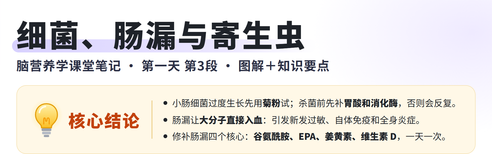
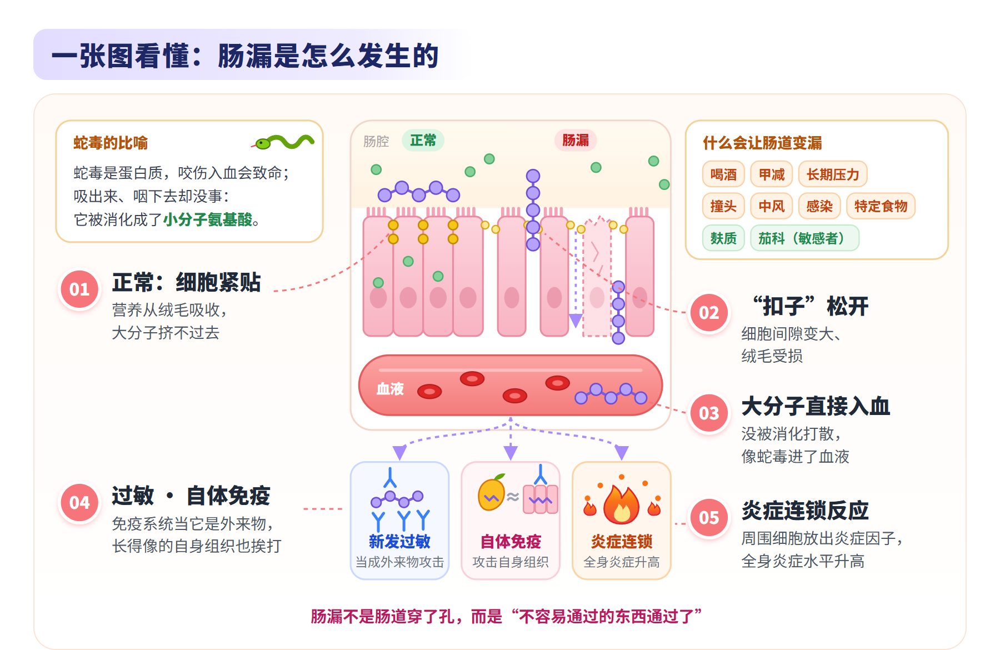
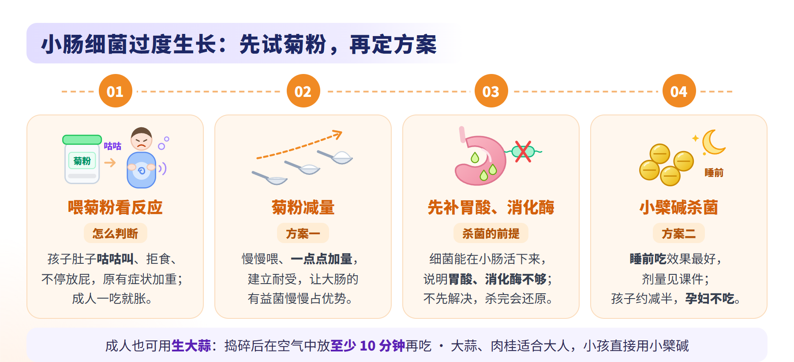
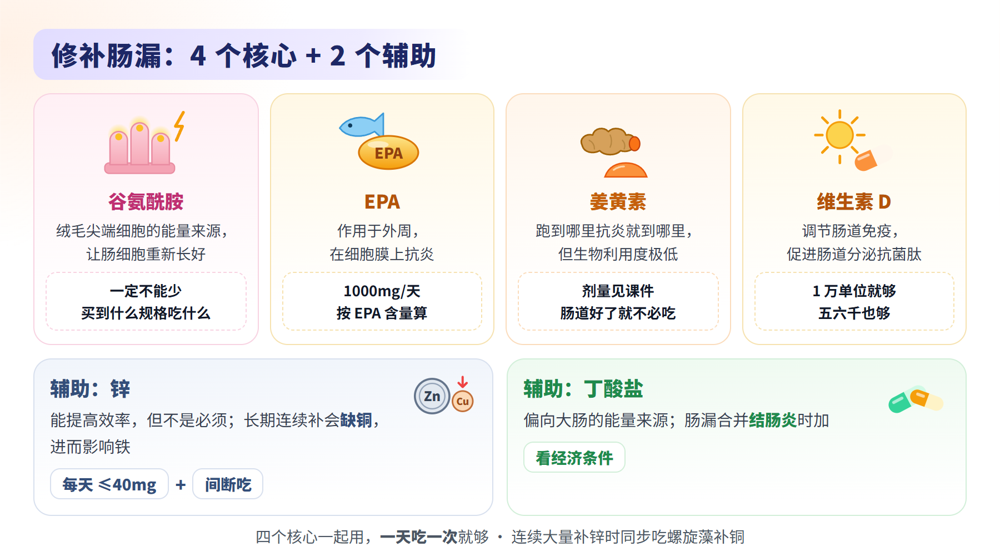
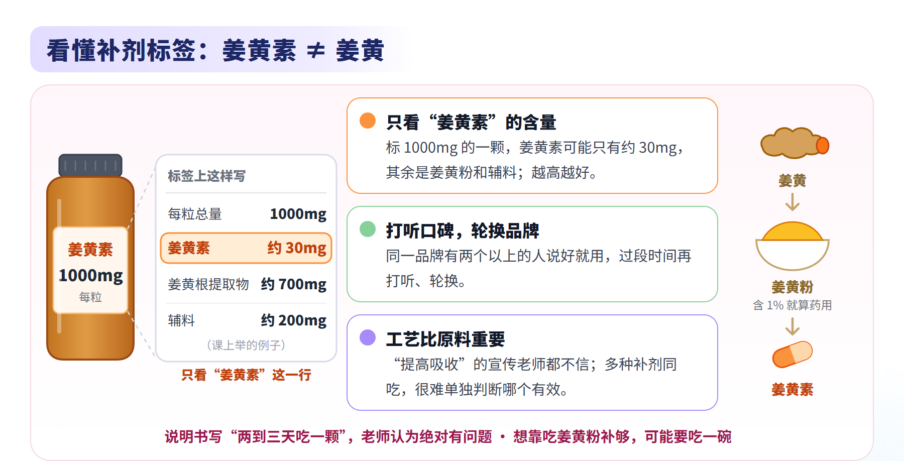
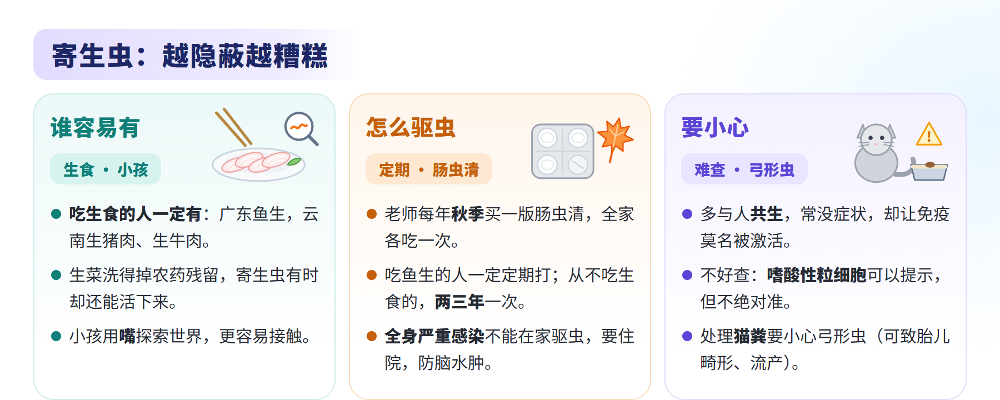
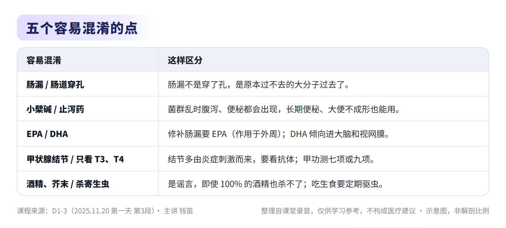
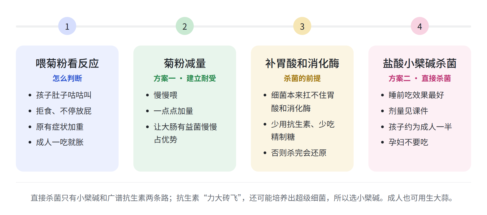
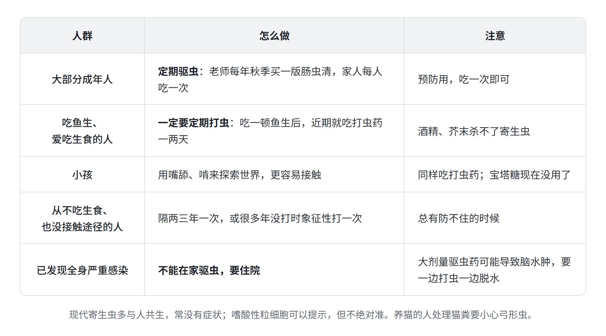
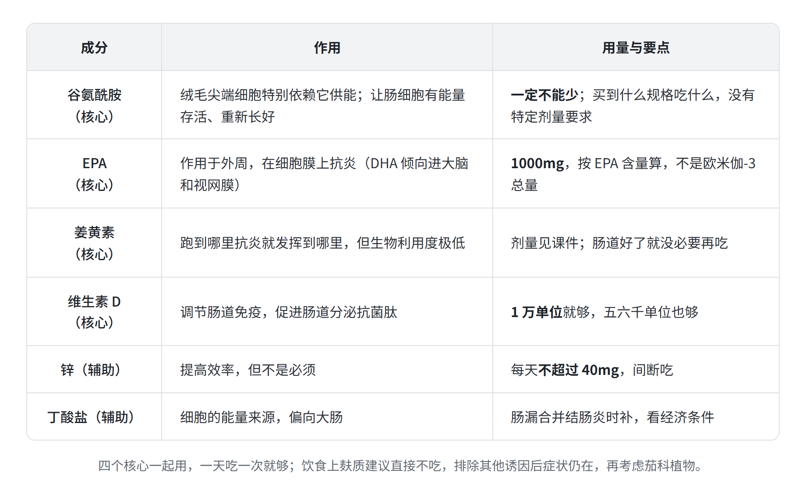

脑营养学 · 第一天 第3段
主题：小肠细菌过度生长（SIBO）、肠漏、寄生虫、修补肠漏的方案
主讲：钱笛 ｜ 日期：2025 年 11 月 20 日（周四） ｜ 时长：58 分 30 秒
本纪要整理自课堂录音，仅供学习参考，不构成医疗建议。







总结
本段是第一天的最后一段。老师从脑发育迟缓孩子常伴的小肠细菌过度生长讲起，讲怎么用菊粉识别、怎么杀菌；再讲肠漏是什么、有哪些后果和诱因，中间答疑甲状腺结节，插讲寄生虫；最后给出修补肠漏的方案，并借姜黄素讲怎么看补剂标签、补锌怎么防缺铜。内容如下：
- 小肠细菌过度生长（SIBO）
- SIBO 与脑发育迟缓
- 高发人群：相当一部分脑发育迟缓的孩子同时有小肠细菌过度生长，因为大脑管不好胃肠，胃肠先变差，又挑食、精制糖吃得多。
- 丙酸中毒：小肠里的细菌特别擅长产生丙酸，大量产生后很快被吸收入血；丙酸适量时是神经细胞的食物，过多就有细胞毒性，让脑发育迟缓、自闭症“怎么调都调不好”，原本烦躁的孩子更烦躁。
- 用菊粉试出来
- 孩子的反应：喂菊粉后肚子一直咕咕叫；会说话的说肚子胀，不会说话的到饭点什么都不吃；不停放屁；原有症状不减反重，更烦躁、话更少、谁碰都哭闹。
- 成人的反应：一吃就胀、肠气一多，就知道该减量了。
- 处理思路
- 方案一，菊粉减量：慢慢喂、一点点加量，建立耐受，让大肠的有益菌慢慢形成优势。
- 先解决根源：细菌本来扛不住胃酸和消化酶，能在小肠活下来，说明这两样不够；同时要小心抗生素和精制糖。这一步不解决，直接杀菌有效，但过一段时间又会还原。
- 方案二，直接杀菌：只有小檗碱（相对温和）和广谱抗生素（“力大砖飞”，可能感染新的细菌、培养出超级细菌）两条路，综合可行性选小檗碱。
- 盐酸小檗碱（黄连素）
- 天然抗菌素：没被大量滥用，肠道细菌里还没发现抗药性，效果比有些抗生素还猛；理论上好坏菌一起杀，实践中杀完好菌反而剩得多，原因不明。
- 不只是止泻药：菌群乱时腹泻、便秘都会出现，所以长期便秘、长期大便不成形、长期腹泻都可以用；吃多了也会拉肚子。
- 怎么吃：实践中睡前吃效果最好，原因不明；课上对剂量有几种说法，剂量见课件。孩子用量约为成人一半，很苦，关键看家长能不能坚持。
- 适用人群：吃菊粉不耐受的脑发育迟缓孩子、酗酒的成年人、长期大便不成形或长期便秘、腹泻的人。
- 注意：孕妇不要吃（以说明书为准）。本段说杀菌期间同时吃益生菌是“白杀”，菊粉可以照吃；第二天讲肠道炎症时又提到“小檗碱加益生菌”，课上说法不一。
- 大蒜与肉桂
- 大蒜：另一种天然抗生素，还含菊粉；必须是生蒜，捣碎后在空气中放至少 10 分钟，大蒜素才被激活，直接吃效率很低。
- 肉桂：有益但作用不强，效果和量有关；老师从没遇到吃肉桂上火的，见得更多的是吃后拉肚子。
- 大人和孩子：大蒜、肉桂适合大人，小孩直接用小檗碱。
- SIBO 与脑发育迟缓

- 肠漏
- 肠漏是什么
- 前面都好也会出问题：即使胃酸、消化吸收都没问题，有肠漏时，神经系统或全身的炎症水平仍会升高。
- 不是正式诊断：主流医学里肠漏不是正统诊断，医院不会下这个诊断，它描述的是一种现象。
- 不是穿了孔：正常肠道细胞一个挨一个紧紧贴着，营养从绒毛吸收；肠漏时绒毛间隔变大、部分损坏，原本挤不过去的东西直接进了血液。
- 蛇毒比喻：蛇毒是蛋白质，咬伤入血会引起凝血而致命；用嘴吸出、甚至咽下去却没事，因为它被消化成了小分子氨基酸。肠漏就相当于大分子没被打散，直接入血。
- 大分子入血的三种后果
- 新发过敏：免疫系统把它当外来物攻击，原本不过敏的东西开始过敏。
- 分子模拟引发自体免疫：比如芒果的成分透过肠道后，被免疫系统攻击并记住；之后身体里结构相似的组织也被一起攻击。
- 炎症连锁反应：有些物质入血后像信号一样，让周围细胞释放炎症因子，一处带动一处，整体炎症水平升高。
- 导致肠漏的因素
- 直接伤肠：喝酒一定会肠漏；感染也会。
- 身体状态：甲减的人很容易肠漏；长期压力、长期处于交感状态也会；对特定食物有反应时同样会。
- 撞头与中风：反复撞头、中风的人一定会肠漏。动物实验里，老鼠头部被砸出脑出血，几周后肠绒毛就分开了；课上案例中，一个调理效果很好的孩子一周内撞头 5 次，已经好转的流鼻血又回来了。
- 麸质：除了引起敏感，还会激活一种“解开扣子”的蛋白，把肠道细胞之间的“扣子”解开，使通透性变大；影响深远，建议直接不吃。
- 茄科植物：土豆、茄子、番茄、甜椒，大部分人没事；敏感的人吃后肠道通透性变大，之后可能开始对牡蛎、坚果等过敏。不是重点，排除其他诱因后症状仍在，再考虑它。
- 答疑：甲状腺结节
- 结节多因发炎：结节有原发性的，更常见的是长期炎症刺激下细胞集中增生；发现结节时，老师通常直接和发炎联系起来。
- 看抗体：甲状腺是少有的看抗体相对很准的情况，抗体一高就尽快消炎；甲功要测七项或九项，不要只测四项、只看 T3、T4。
- 病程分阶段：抗体先升高、先攻击甲状腺，此时 T3、T4 还能维持；扛不住时才表现为抗体高、炎症高、功能下降。
- 肠漏是什么
- 寄生虫
- 现代寄生虫更隐蔽
- 从大型到共生：以前的钩虫、蛔虫、绦虫会引起剧烈腹痛、钻进胆道；公共卫生进步后少见了，但小型寄生虫会和人形成共生，常没有症状，却让免疫系统莫名其妙被激活。
- 不好查：早期、后期都可能没有症状；嗜酸性粒细胞可以提示，但不绝对准。
- 谁容易有、怎么驱
- 吃生食的人一定有：广东的鱼生（淡水鱼寄生虫特别多），云南的生猪肉、生牛肉、生猪皮；生菜洗得掉农药残留，寄生虫有时还能活。能在人身上活下来的，通常来自鸭子、鱼等动物，水果上的一般活不住。
- 小孩：用嘴舔、啃来探索世界，更容易接触寄生虫。
- 定期驱虫：大部分成年人定期驱虫，老师每年秋季买一版肠虫清，家人每人吃一次；吃鱼生、爱吃生食的人一定要定期打虫；从不吃生食的人隔两三年一次。
- 严重感染要住院：全身长满寄生虫的人不能在家驱虫，大剂量驱虫药可能引起脑水肿，要一边打虫一边脱水。
- 别信偏方：酒精（即使 100% 的酒）、芥末都杀不了寄生虫。
- 宠物与弓形虫
- 宠物：身上的寄生虫一般不和人共生。
- 弓形虫：猫的弓形虫一定会传到人身上，目前唯一确认的危害是胎儿畸形或流产；摸猫一般没事，处理猫粪要小心。
- 现代寄生虫更隐蔽

- 修补肠漏的方案
- 四个核心，一天一次
- 谷氨酰胺（一定不能少）：绒毛尖端细胞特别依赖谷氨酰胺供能；肠细胞受损往往不是被直接“砍断”，而是内部出现能量危机、线粒体无法工作而被饿死，补谷氨酰胺能让它重新启动、长好。买到什么规格吃什么，没有特定剂量要求。
- EPA（不能少）：DHA 倾向透过血脑屏障营养大脑和视网膜，EPA 倾向作用于外周，在细胞膜上抗炎；1000mg，按 EPA 含量算，不是欧米伽-3 总量（每颗含 EPA 500mg 就吃两颗）。
- 姜黄素（不能少）：跑到哪里抗炎就发挥到哪里，对肠道非常有用，缺点是生物利用度极低；剂量见课件。可以长期吃，但肠道好了就没必要。
- 维生素 D（尽量不缺）：调节肠道免疫，促进肠道分泌抗菌肽，避免细菌无限制增殖；辅助肠道 1 万单位就够，五六千单位也够。
- 吃法：四样一起，一天吃一次就够。
- 两个辅助
- 锌：能提高效率，但不是必须；每天不超过 40mg，间断吃。
- 丁酸盐：细胞的能量来源，偏向大肠；肠漏合并结肠炎（如长期拉肚子、一吃东西就先跑厕所）时补，看经济条件。
- 四个核心，一天一次

- 看补剂标签与补锌
- 以姜黄素为例看标签
- 姜黄素 ≠ 姜黄：姜黄素是从姜黄粉里提取的，含量不高；姜黄粉含 1% 姜黄素就算药用标准，想靠吃姜黄粉补够，可能要吃一碗。
- 标签的“擦边球”：市售姜黄素几乎都标 1000mg，一颗里姜黄素可能只有约 30mg，其余是姜黄根提取物（基本就是姜黄粉）和辅料；说明书写两到三天吃一颗，老师认为绝对有问题。
- 怎么挑：只看“姜黄素”三个字对应的含量，越高越好；再打听周围人的使用效果，同一品牌有两个以上的人说好就用，过段时间再打听、轮换。
- 工艺比原料重要：黑胡椒素等“提高吸收”的宣传老师都不信；多种补剂一起吃时，很难单独判断某一种有没有效。
- 锌、铜、铁与金属蓄积
- 补锌会拖累铜和铁：每天超过 40mg，或长期连续补（即使每天 20mg、连补一个月），会缺铜，铜又影响铁吸收，最终多种金属缺乏。
- 怎么补：省事的做法是间断吃，老师自己只吃一个月；连续大量补锌时同步吃螺旋藻补铜，还能顺带吸附重金属；不管怎么吃，单日不超过 40mg。
- 金属不宜多补：除了镁，其他金属多了都有生物毒性；老年人铁、铜蓄积会“出大事”，铁蓄积容易造成严重的神经退行性疾病；含银离子的消毒剂可能让皮肤变蓝。
- 以姜黄素为例看标签
章节速览
时间为本段录音内的时间点。
00:04脑发育迟缓的孩子常伴 SIBO
相当一部分脑发育迟缓的孩子同时有小肠细菌过度生长：大脑管不好胃肠，又挑食、精制糖吃得多。小肠里的细菌特别擅长产生丙酸，大量产生后很快被吸收入血，造成丙酸中毒。
02:14丙酸中毒与菊粉试验
丙酸适量时是神经细胞的食物，过多就有细胞毒性，让脑发育迟缓、自闭症怎么调都调不好。喂菊粉后孩子肚子一直咕咕叫、拒食、不停放屁、原有症状加重，就要考虑小肠细菌过度生长；第一个方案是菊粉减量，慢慢加量建立耐受。
04:52杀菌前先补胃酸，再用天然抗菌素
细菌能在小肠活下来，说明胃酸和消化酶不够，同时要小心抗生素和精制糖；这一步不解决，直接杀菌有效，但过一段时间又会还原。盐酸小檗碱（黄连素）是天然抗菌素，肠道细菌里还没发现抗药性；成人也可用生大蒜，捣碎后放至少 10 分钟再吃，肉桂有益但不强。
09:33小檗碱怎么吃：睡前效果最好
老师自己一天吃一次，实践中睡前吃效果最好，原因不明；课上对剂量有几种说法，剂量见课件。它不只止泻，菌群乱时腹泻、便秘都会出现，所以长期便秘、大便不成形、长期腹泻都可以用；孩子用量约为成人一半。
13:52为什么选小檗碱，谁不能吃
直接杀肠道细菌只有小檗碱和广谱抗生素两条路，抗生素“力大砖飞”，还可能培养出超级细菌。小檗碱理论上好坏菌一起杀，实践中好菌反而剩得多；适用于菊粉不耐受的脑发育迟缓孩子、酗酒的成人、长期大便不成形的人，孕妇不要吃。
18:30肠漏：不该过去的东西过去了
即使前面的消化环节都没问题，有肠漏时神经系统和全身的炎症水平仍会升高。肠漏不是主流医学的正式诊断，描述的是一种现象：肠道细胞原本紧紧贴在一起，绒毛间隔变大、部分损坏后，原本挤不过去的东西直接进了血液。
21:00蛇毒比喻与三种后果
蛇毒是蛋白质，咬伤入血能致命，吸出甚至咽下却没事，因为它被消化成了小分子氨基酸；肠漏就相当于大分子没被打散直接入血。后果有三种：新发过敏、分子模拟引发自体免疫、炎症因子连锁反应让全身炎症升高。
24:36导致肠漏的因素
喝酒一定会肠漏，甲减、长期压力、对特定食物有反应、感染也会；反复撞头、中风的人一定会肠漏，动物实验中老鼠头部被砸出脑出血，几周后肠绒毛就分开了。吃进去的东西里，麸质会把细胞之间的“扣子”解开，建议直接不吃；茄科植物排除其他诱因后再考虑。
29:33答疑：甲状腺结节先看抗体
甲状腺炎是自体免疫反应；结节有原发性的，更常见的是长期炎症刺激下细胞集中增生。甲状腺看抗体相对很准，抗体一高就尽快消炎；甲功要测七项或九项，不要只看 T3、T4。
31:37寄生虫：越隐蔽越糟糕
以前的钩虫、蛔虫、绦虫症状明显；现在大型寄生虫少了，小型寄生虫与人共生，常没有症状，却让免疫系统莫名被激活。吃生食的人一定有寄生虫，如鱼生、生猪肉、生牛肉；生菜洗得掉农药，寄生虫有时还能活。
34:45定期驱虫与弓形虫
小孩用嘴探索世界，更容易接触寄生虫。大部分成人定期驱虫，老师每年秋季买一版肠虫清全家各吃一次；吃鱼生的人一定要定期打虫，全身严重感染要住院驱虫。嗜酸性粒细胞可以提示但不绝对准；养猫的人处理猫粪要小心弓形虫。
40:41修补肠漏首选谷氨酰胺
绒毛尖端细胞特别依赖谷氨酰胺供能；肠细胞受损往往是内部能量危机、被“饿死”，补谷氨酰胺能让它重新启动、长好。买到什么规格吃什么，没有特定剂量要求。
43:07EPA、维生素 D 与姜黄素
修补肠漏要的是 EPA（作用于外周、在细胞膜上抗炎），DHA 则倾向进大脑和视网膜。老师打勾的四个核心是谷氨酰胺、EPA、姜黄素、维生素 D，一天吃一次；EPA 1000mg 按 EPA 含量算，维生素 D 辅助肠道 1 万单位就够。
46:33怎么看补剂标签：以姜黄素为例
市售姜黄素几乎都标 1000mg，其中姜黄素可能只有约 30mg，其余是姜黄根提取物和辅料。要看“姜黄素”三个字对应的含量，越高越好，再打听口碑、轮换品牌；工艺比原料重要得多。
53:37补锌防缺铜，丁酸盐看情况
锌是辅助，每天不超过 40mg；长期连续补会缺铜、进而缺铁，可以间断吃，或同步吃螺旋藻补铜，老年人尤其要注意铁、铜蓄积。肠漏合并结肠炎时可加丁酸盐，第一天的课到此结束。
关键内容
本段为讲座，没有需要决策的事项。关键内容如下：
- 小肠细菌过度生长：先用菊粉试；杀菌前先解决胃酸、消化酶不足，否则杀完会反复。
- 小檗碱：天然抗菌素，便秘、腹泻都能用，睡前吃效果最好；剂量见课件，孕妇不吃。
- 肠漏：大分子直接入血，引发过敏、自体免疫和炎症；喝酒、反复撞头、中风一定会肠漏。
- 修补肠漏：四个核心是谷氨酰胺、EPA、姜黄素、维生素 D，一天一次。
- 看标签与补锌：姜黄素只看“姜黄素”的含量；补锌每天不超过 40mg、间断吃。
- 寄生虫：现代寄生虫隐蔽难查，吃生食的人和小孩要定期驱虫；全身严重感染要住院驱虫。
- 甲状腺结节：多与发炎有关，先看抗体，甲功测七项或九项。
金句时刻
「肠漏本身不是说肠道穿了一个孔，而是不容易通过的东西通过了。」
—— 一句话讲清肠漏的本质：问题不在“破洞”，而在没被打散的大分子进了血液。
「最隐蔽的事情是最糟糕的。比如蛔虫，你肚子痛你是能知道的；这种长在身体某个地方隐蔽起来的，你怎么办？」
—— 点出现代寄生虫的麻烦：没有症状、查不出来，所以要靠定期驱虫来防。
「其实很多补剂起决定性作用的不只是原料，工艺比原料重要很多。」
—— 挑补剂不能只看标签上的数字，还要看实际吃下来的效果和口碑。